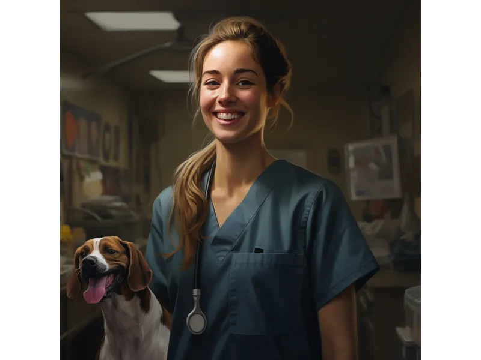

Conoce a Patas Pulcras
Más que un lavado, una experiencia de amor y cuidado para tu mascota.

De Sueño a Realidad
María estudió veterinaria, pero pronto se dio cuenta de que su verdadero sueño era crear un espacio donde los perros no solo recibieran cuidados esenciales, sino que también disfrutaran de una experiencia llena de cariño y atención. Así, en 2015, con un pequeño local y un gran corazón, "Peludos & Relucientes" abrió sus puertas. Desde el principio, nuestra misión fue clara: proporcionar un servicio de lavado y cuidado de perros que fuera más allá de lo convencional.